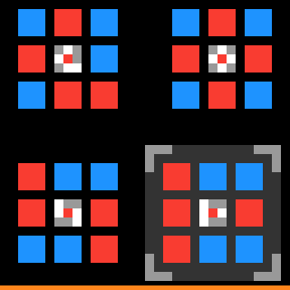
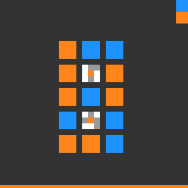
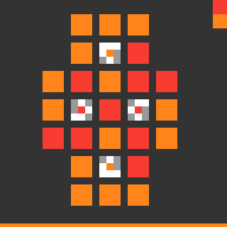
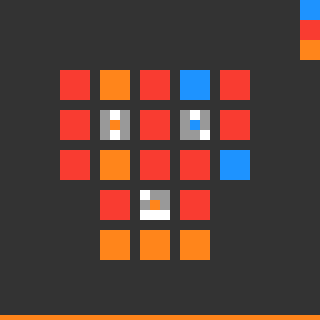
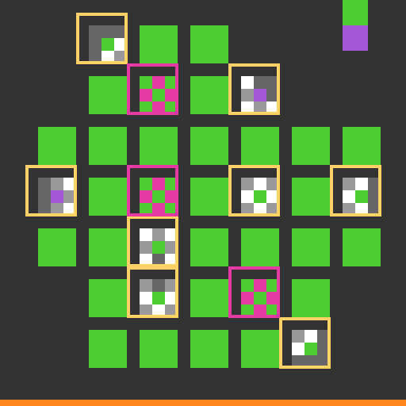
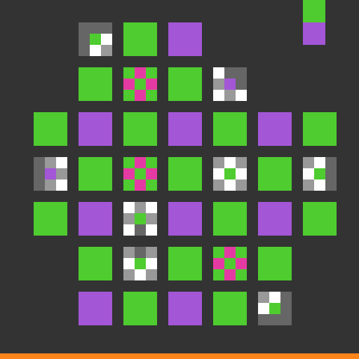

White mark
Copy the color at the center of the clue.
Previous: rejected level-5 target
EXP-DUCK-032 reconstructs four accepted targets, hides each one in turn, and asks whether the other three levels teach enough to predict it exactly.
Copy the color at the center of the clue.
Use a different state. Overlapping clues must agree on which different state works.




| Hidden level | Training levels | Predicted targets | Result |
|---|---|---|---|
| Level 1 | 2, 3, 4 | 1 | Exact |
| Level 2 | 1, 3, 4 | 1 | Exact |
| Level 3 | 1, 2, 4 | 1 | Exact |
| Level 4 | 1, 2, 3 | 1 | Exact |



No successful level-5 action was used to produce this plan.
The calibration gate passes. Run one private isolated Kaggle test. Promote only if the nine-click helper advances from level 5 to level 6 with every observed effect correct.